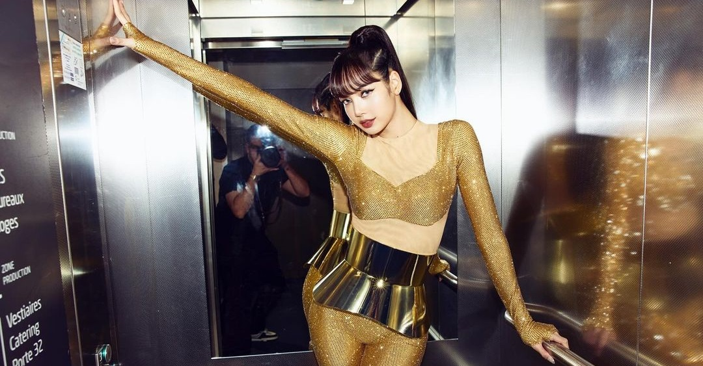

Published January 28, 2024
Blackpink member Lisa is shining, shimmering, and splendid in her stage outfit for a gala concert in Paris, France.
On Instagram, the K-pop idol shared some snaps of her adorned in gold and sporting her iconic bangs.
"Last night was amazing A big thank you to the yellow coins for this unforgettable night. Nice to have seen the French Blinks again, love you," she wrote in the caption.
Lisa, together with K-pop group Stray Kids, performed at the 2024 Le Gala des Pièces Jaunes Concert (Yellow Coin Concert). She performed some of her hit tracks, including "Lalisa."
This marks the K-pop star's first performance since it was announced that she and her fellow Blackpink members did not renew their solo contracts with YG Entertainment.